2. Administrators
2.1. Installation
Note: The following instructions assume that Cartograplant will be installed on a Linux server.
2.1.1. Cartograplant Drupal module
Cartograplant is a module for Drupal 7 CMS, dependent on the Tripal 7.x-3.x, TripalGalaxy 7.x-1.x modules, and GeoServer v2.11.2. Installation instructions for Drupal 7, Tripal, and GeoServer are available online. TripalGalaxy can be installed by cloning it from GitHub, in the sites/all/modules directory of Drupal, and then enabling it with Drupal shell (drush).
$ git clone https://github.com/tripal/tripal_galaxy.git
$ drush en tripal_galaxy
Once these dependencies are installed, you can proceed with installing the Cartograplant module, in the sites/all/modules directory of Drupal.
$ git clone https://gitlab.com/TreeGenes/Cartogratree.git
## create Cartograplant directory and copy the module contents in it
$ mkdir Cartograplant
$ mv Cartograplant/drupal_module/* Cartograplant/
## remove the other Cartograplant components
$ rm -rf Cartograplant/
## enable the module
$ drush en Cartograplant
2.1.2. Library dependencies
2.1.3. Mapbox
Cartograplant uses Mapbox, a mapping software, for creation of its base map and to host some of its layers as tilesets. Cartograplant uses the MapboxGL JS library to add layers and data to the map.
The MapBox GL JS API reference can be found here: https://docs.mapbox.com/mapbox-gl-js/api/
To use Mapbox, you first need to create an account and get an access token.
2.1.4. Cartograplant API
A final dependency for the Cartograplant Drupal module is the Cartograplant API. This in turn depends on NodeJs v8.11.2, NPM v5.6.0, and PM2. This API also uses the modules mem-cache, cors, pg, body-parser, and response-time. To install the Cartograplant API follow these steps:
## create a directory for this API
$ mkdir -p Cartograplant/api
## copy the API files into in
$ git clone https://gitlab.com/TreeGenes/Cartograplant.git
$ mv Cartograplant/NodeJsAPI/* Cartograplant/api/
## remove the other Cartograplant components
$ rm -rf Cartograplant/
## replace the values for host, port, database, user, and password in query.js
## install the express module
$ cd Cartograplant/api
$ npm install express pg --save
## install PM2 and run it as a service
$ sudo npm install pm2@latest -g
$ sudo pm2 startup systemd
## confirm that it's running
$ sudo systemctl status pm2-root.service
## start Cartograplant API and add it to PM2's process list
$ pm2 start Cartograplant_api
## to [stop|start|restart|get info] run:
$ pm2 [stop|start|restart|info] Cartograplant_api
2.2. Configuration
Go to your Drupal website and navigate to admin/Cartograplant/settings. From this page you can set up the URLs for the GIS and API servers (admin/Cartograplant/settings/servers/edit), add|edit|delete groups and subgroups for organizing the layers, and add|edit|delete|set access permissions for layers. For environmental layers, you can also get the values at the locations of the trees.
2.2.1. Groups
For groups, two values are required: Group name and Group rank. The Group name will be displayed on Cartograplant page, and the Group rank determines the location in the list for this gror up (the lower the rank the higher in the list).
2.2.2. Subgroups
For subgroups, only one value is required: Subgroup name. Once created, a subgroup can be added to one or more groups. The Subgroup name will be displayed on Cartograplant page, based on the rank assigned in the group.
2.2.3. Layers
Once the groups and subgroups are defined, the layers can be added to Cartograplant. The layer page prompts for the following values:
Human-readable name: this is the name shown to the Cartograplant users. Make sure it is descriptive, and uniquely identifies the layer.
Machine name: this is the name used by the GIS server.
URL: the location from where this layer was downloaded.
Trees layer[yes|no]: tree layers are shown on top of the environmental layers.
Group name and Subgroup name, discussed above.
Layer rank: the order in which layers within a subgroup are listed. If from worldclim for example, then the layer ranks will range from 1-12 corresponding with the months January - December.
Fields: which fields from this layer are exposed to the users (described below).
The machine name is defined by you when you add and publish the layer to geoserver. For adding mapbox layers log in to your mapbox account and go to: https://studio.mapbox.com/tilesets/. Convert your layer to one of the accepted formats, add it as a tileset, then go to https://studio.mapbox.com/, select the style of your base map or create a new one. Then click on the ‘Add Layer’ button at the top left of the screen and select your tileset as the source.
2.2.3.1. Fields
Field name: this is the name returned by the GIS server.
Display name: this is the name shown to the users.
Filter[yes|no]: whether to allow the users to filter the data based on this field’s values.
Filter type[continuous|discrete]: the types of values present in this field.
Precision used with continuous values
Mask value: value returned by layer that should be replaced.
Mask display: text shown to user for masked values.
Pop-up whether this field should be shown in the pop-up window, when the user clicks on the map.
Field rank: the order in which fields within a layer are listed.
2.2.3.2. Layer permissions
Using this form, administrators can control which users or Drupal roles can access each layer.
2.2.3.3. Get layer values
Using this form, administrators can extract the values from an environmental layer at the locations with geo-referenced trees, and then save these values in the database.
3. Database setup
Cartograplant and its API depend on several tables and materialized views. Their schemas are shown below. If the images are too small and hard to see, right click -> ‘View Image’ will give you the full image resolution.
3.1. Chado
Chado is a db schema optimized for genomic data. Cartograplant makes use of several chado tables to store and receive its data. Read about it more here: http://www.gmod.org/wiki/Chado_Manual
3.2. Trees
3.2.1. ct_trees_all_view
This is the main view used to populate the map with tree data. It’s a view that is created from joining multiple tables to allow for greater read access speed.
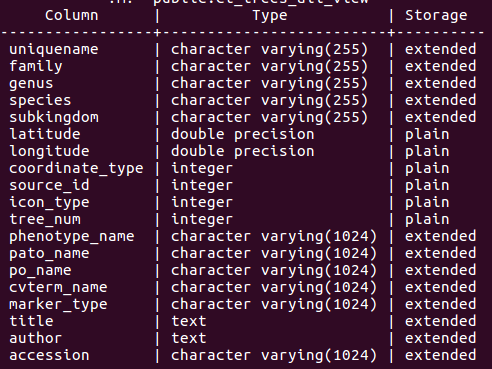
3.2.2. ct_trees
This is the table which is used by ct_trees_all_view to cross reference the trees with their genomic and phenotypic data. It contains all the trees.
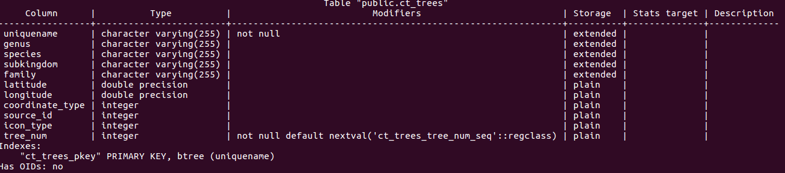
3.2.3. chado.ct_view
This is the main view that houses the trees submitted through TPPS. It uses join conditions on tables such as chado.stock and chado.stockprop to build each record.
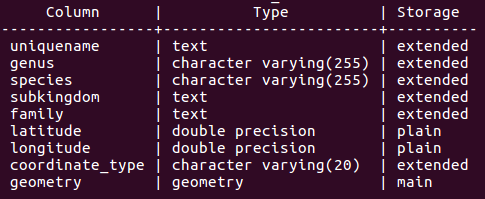
3.2.4. chado.new_geno_view
This view contains tree genotype records.
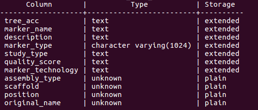
3.2.5. chado.new_pheno_view
This view contains tree phenotype records.
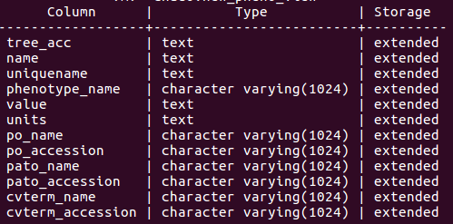
3.2.6. chado.plusgeno_view
This view contains tree publication records.
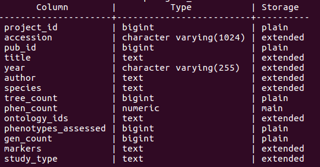
3.3. Layers
The layers tables are important for the administration side because they are what decide which layers are available and useable to the user.
3.3.1. Cartograplant_layers
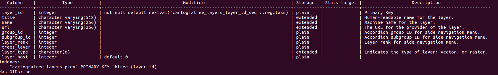
3.3.2. Cartograplant_layer_permissions
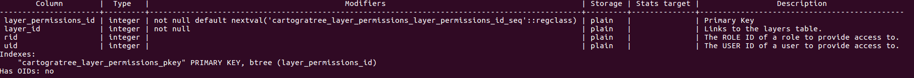
3.3.3. Cartograplant_fields
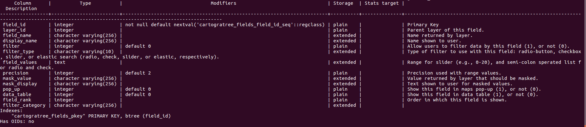
3.3.4. Cartograplant_groups
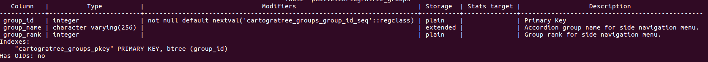
3.3.5. Cartograplant_subgroups
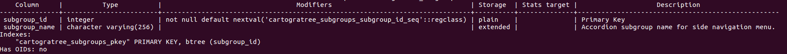
3.3.6. Cartograplant_groups_subgroups
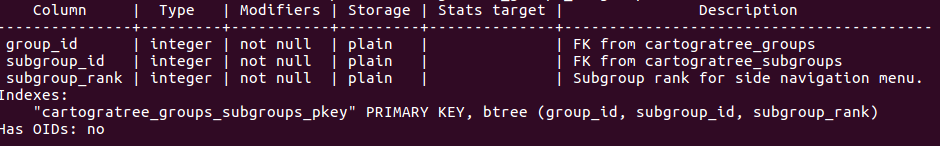
3.4. Sessions
Session tables must also be created to store logged in user and anonymous user sessions.
3.4.1. ct_sessions
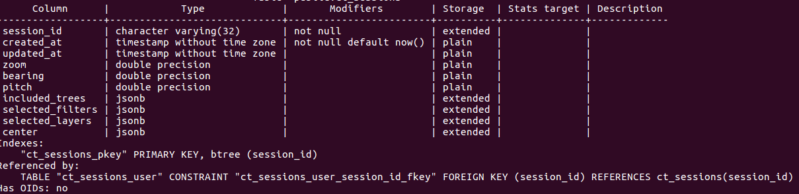
3.4.2. ct_user_sessions
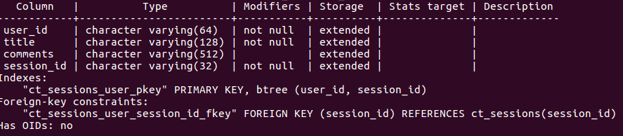
Ones all these tables and views have been created in your PostgreSQL databse, then go to the API directory of the project and with your favorite text editor edit query.js
Input the necessary values for the following configuration fields in query.js
const conf = {
host: <host>,
port: <port>,
database: <database_name>,
user: <username>,
password: <password>,
...
};